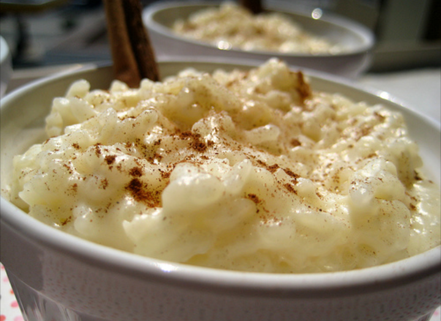

Arroz con Dulce

Ingredients:
- Long-grain white rice: 1 cup (240 g)
- Water: 2–3 cups (480–720 mL)
- Whole milk: 3–4 cups (720–960 mL)
- Evaporated milk: 1 can (12 oz / 355 mL)
- Sweetened condensed milk: 1 can (14 oz / 397 mL)
- Cinnamon sticks: 2 (3-inch / 7.5 cm)
- Lime or orange zest: 1 small strip (optional, for citrus flavor)
- Kosher salt: ⅛ tsp (1.5 g)
- Ground cinnamon: For garnish (optional)
Step by Step:
- Rinse the rice under cold water until the water runs clear to remove excess starch.
- In a saucepan, combine the rinsed rice, water, cinnamon sticks, and a pinch of salt. Bring to a boil over medium-high heat, then reduce heat to low, cover, and cook for 15–20 minutes until the water is absorbed and the rice is tender.
- In a separate bowl, warm the whole milk, evaporated milk, and condensed milk together over low heat or in a microwave until lukewarm.
- Remove the cinnamon sticks from the rice. Stir in the warmed milk mixture and sugar. Bring to a gentle boil, then reduce heat to low.
- Simmer uncovered for 25–30 minutes, stirring occasionally to prevent sticking and scorching. The mixture should thicken to a creamy consistency.
If it becomes too thick, add a splash of milk to adjust.
- Remove from heat. Stir in vanilla extract and optional citrus zest. Let cool slightly for 30 minutes before serving.
- Serve warm or chilled. Garnish each portion with a sprinkle of ground cinnamon.
Home